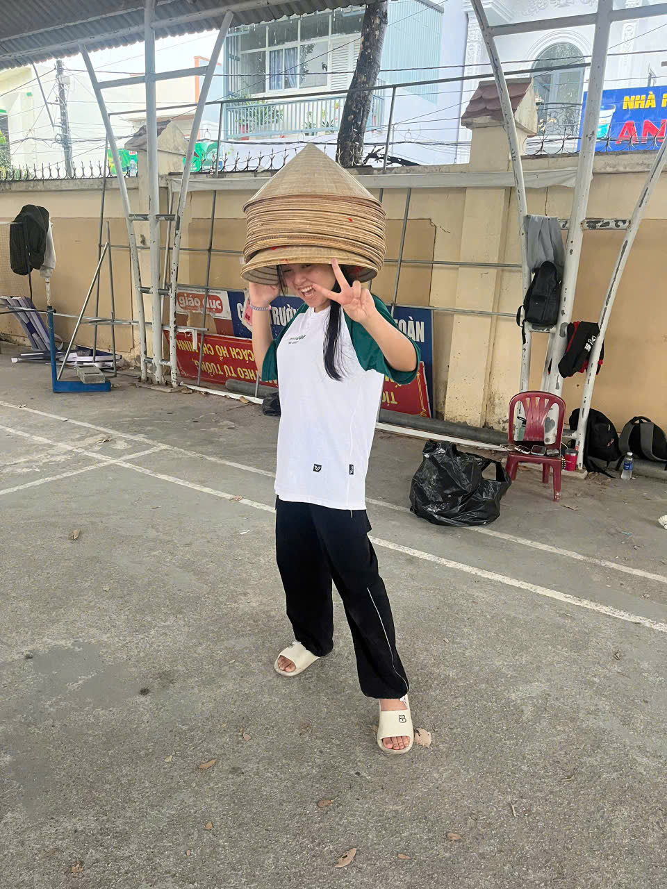
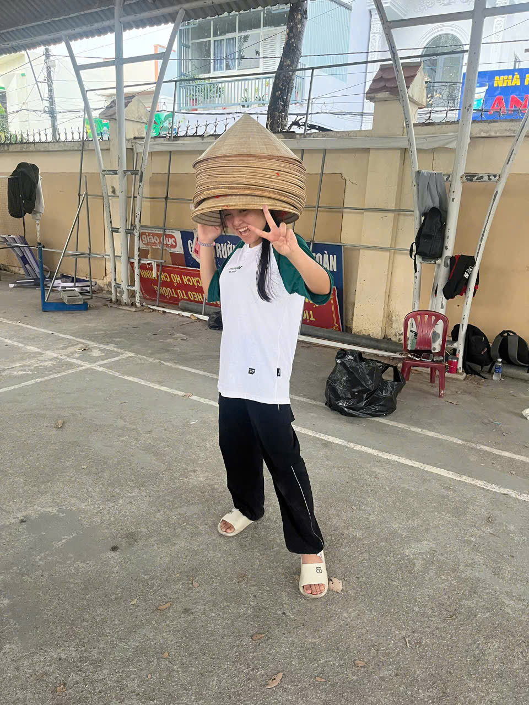

Gửi Kim,
Hé luu Kim, tr ơi bạn chung tổ suốt 3 năm lun k đi đâu hết quá xịn. Nhưng mà sắp tới đây tụi mình k còn ngồi chung tổ nữa r 😭😭. Đối với tui thì Kim là 1 người vô cùng thân thiện lun á, thấy Kim lúc nào cũng dễ thương dễ gần lắm. Mới đầu khi được chung tổ Kim đã gây ấn tượng mạnh đến tui r rất cutee đến h vẫn dị lun á, còn mấy đứa kia hả mới đầu dễ thương còn bây h thì nhìn mát mát tẻn tẻn sao á 🤣(suỵt nói bé thui nhe mấy đứa kia nghe đó). Nhớ những lúc tụi mình làm bài chung với nhau, có điều Kim đi chơi với tui hơi ít đó muốn trấn lột Kim qua những buổi đánh bài mà hơi khó. Thật sự là tui không thể nào quên được 1 người vừa chăm vừa khiêm tốn mà vừa dễ mến, nếu trên thang điểm 10 thì tui cho Kim 9,5 còn 0,5 là do Kim k hơn thua như tui nên bị trừ điểm. Và sau này tui sẽ không bao h quên đi Kim đâu huhu, dù sau này mỗi người chúng ta 1 trường nhưng tụi mình vẫn sẽ nhắn tin với nhau nhé Kimm. Cuối thư thì tui chúc cho Kim có thật nhiều sức khỏe và mọi may mắn sẽ đến với Kim trong kì thi sắp tới, tui tin nhất định Kim sẽ đậu NV1 vào trường Kim yêu thích nhất.
Ký tên,
Tín Phan sai đẹp chiêu
 
